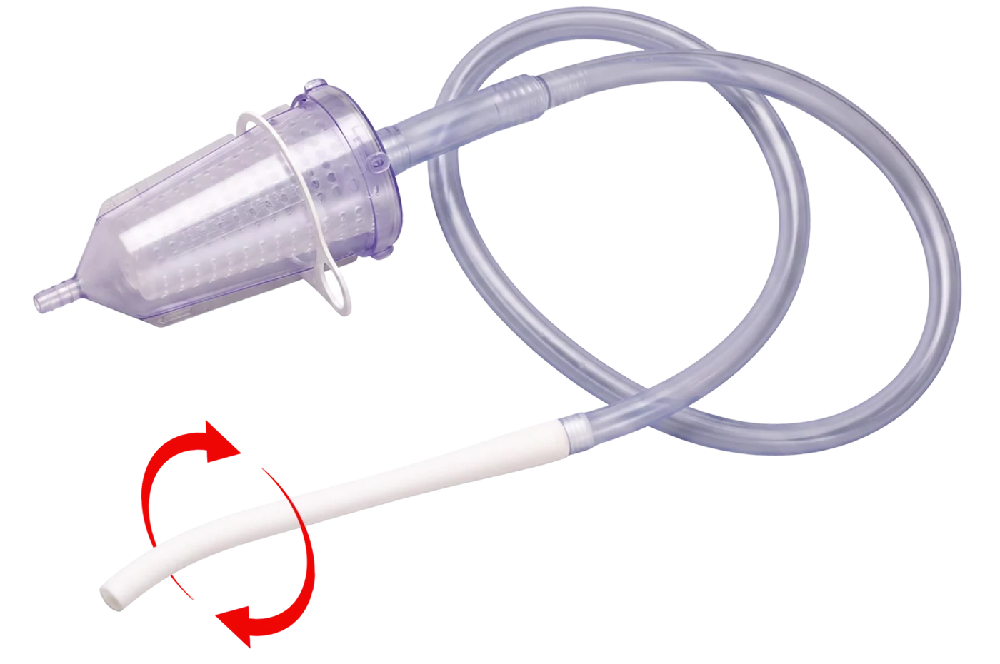
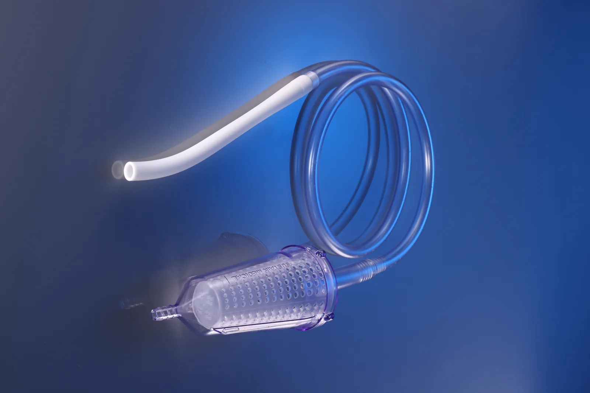
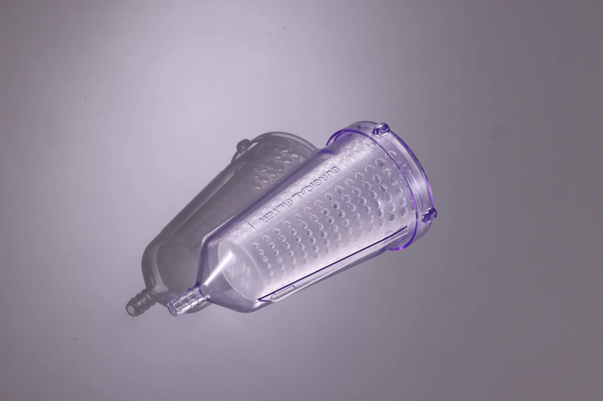
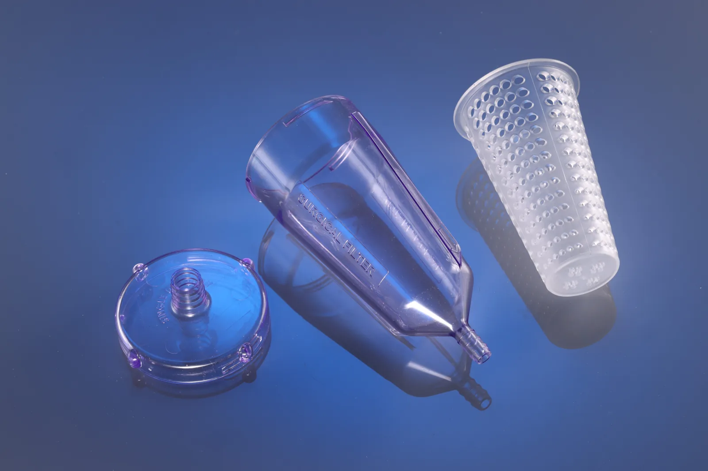
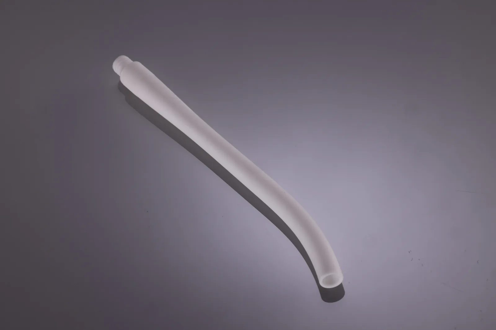
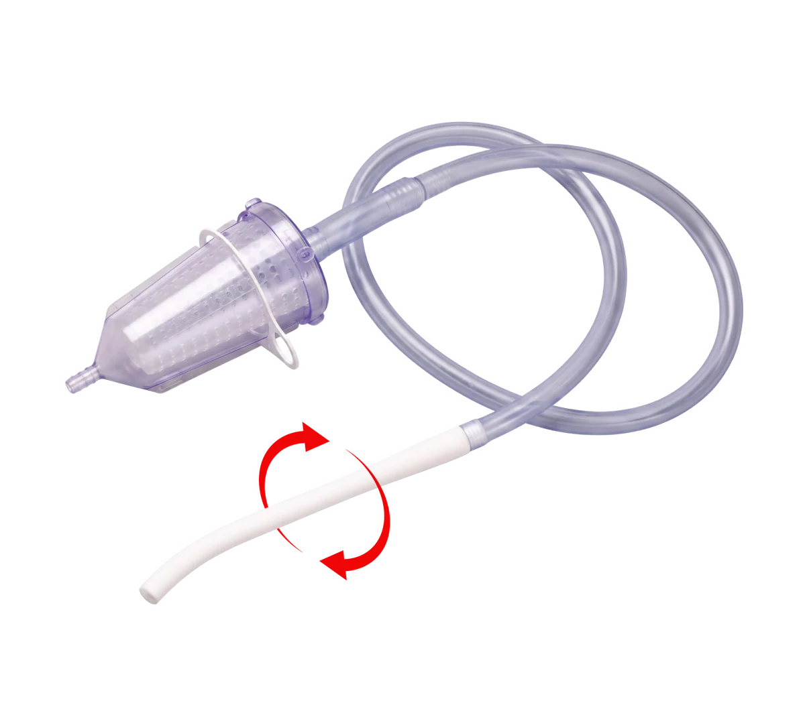

Suction line and handpiece clogs disrupt your case. TruFlo Ortho keeps it flowing.
A large-bore handpiece and patented cyclone filter keep full suction pressure from incision to close.

The Problem
Every surgical team knows the frustration of suction clogs. Handpiece clogs are a recurring nuisance, repeatedly interrupting surgical workflow. When debris moves downstream and clogs the suction line, the interruption can become much more significant, sometimes requiring replacement of the suction tubing. Workflow stops, frustration rises, and both procedure time and cost per case increase.
- 01Handpiece clogs mid-caseSuction drops at the surgical site. The team stops to clear or swap it.
- 02Clogs build in the suction lineDebris lodges in the tubing and flow to the unit drops.
Bone fragments, debris, and viscous materials collect in a standard-bore handpiece and along the suction line, so suction drops or stops in the middle of the case.
The Solution
TruFlo Ortho keeps it flowing.
- 1Gently curved tipAccess to the femoral canal.
- 2Large-bore rotating handpiecePasses debris without clogging.
- 3Cyclone FilterTraps debris. Keeps full suction pressure.
The integrated Cyclone Filter captures debris and viscous materials, maintaining continuous flow to any suction evacuation system.




Large-Bore Handpiece & Filter
Clog-proof and ergonomic.

1230 Interruptions. Peak Performance. Pays for Itself.
Based on the fixed assumptions in the savings calculator: 3 handpiece clogs at 0.5 min and 0.2 inline clogs at 4 min per case, $65 per OR minute, $12 current handpiece and $75 TruFlo cost per case.
The large-bore TruFlo handpiece and patented cyclone filter work together to capture the debris that typically causes suction obstructions, keeping suction flowing throughout the procedure.
Suction occlusions create unnecessary delays and increase stress for surgeons and operating room personnel. TruFlo Ortho helps keep the surgical team focused on the procedure.
Clogged suction lines interrupt surgical workflow, reduce operating room efficiency, and negatively affect team performance. TruFlo Ortho helps eliminate these avoidable disruptions.
Operating room time is expensive. Every minute saved by avoiding suction-related interruptions can contribute to meaningful reductions in procedure costs.
TruFlo Ortho has been thoughtfully packaged to minimize its storage footprint, making it easier for facilities to stock, store, and access the device when needed.
Surgeons who have used TruFlo Ortho continue to request its availability in their operating rooms. OR staff who have experienced its performance also recognize the potential operational and financial benefits.